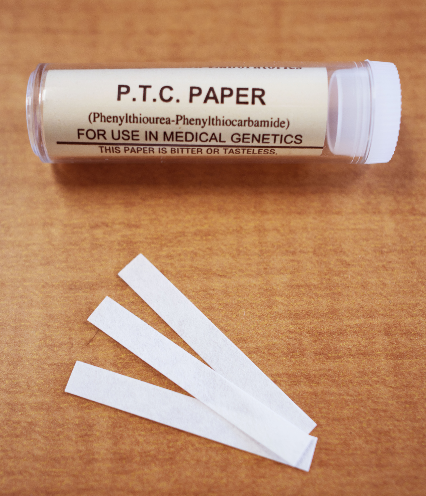
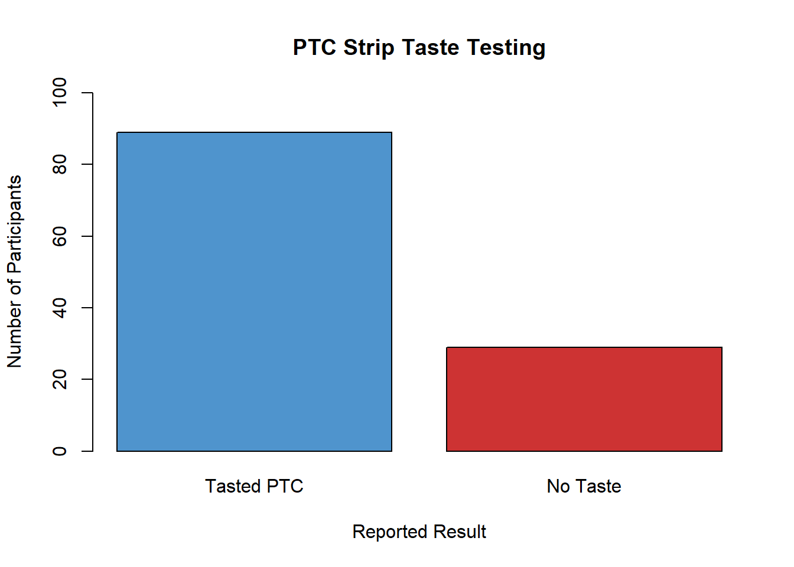
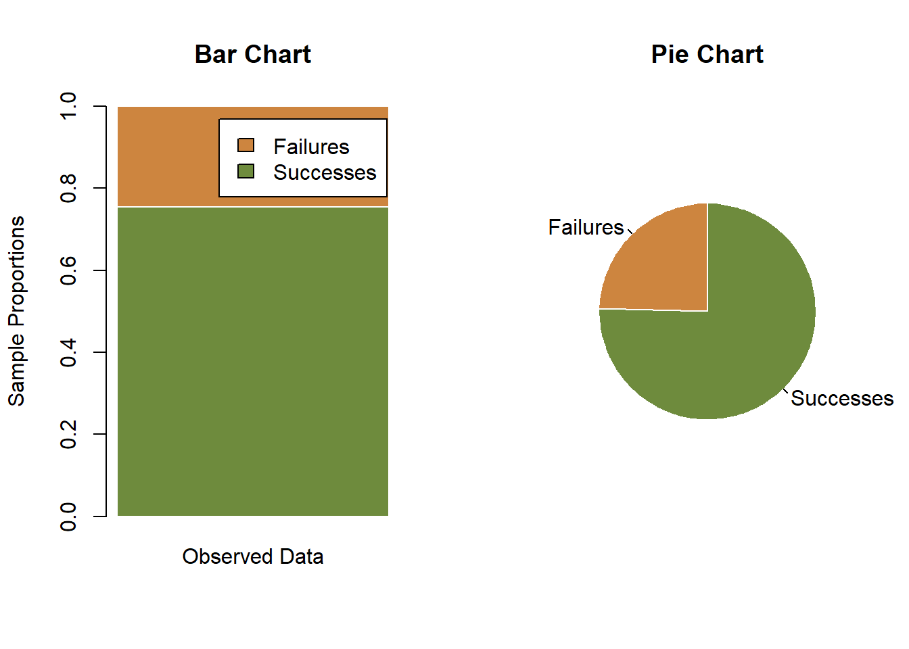
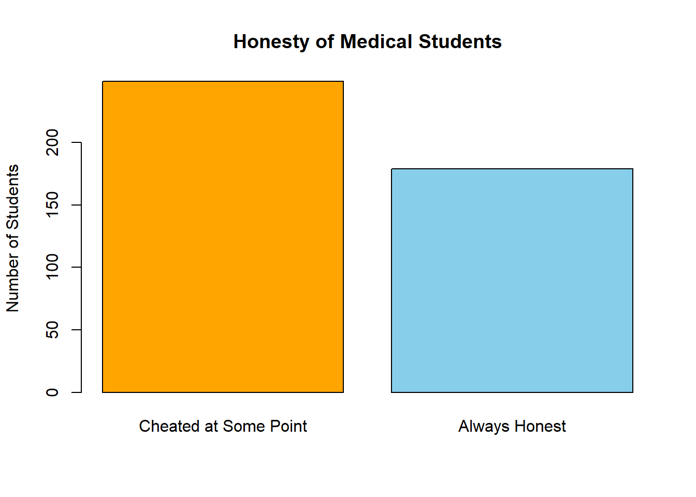
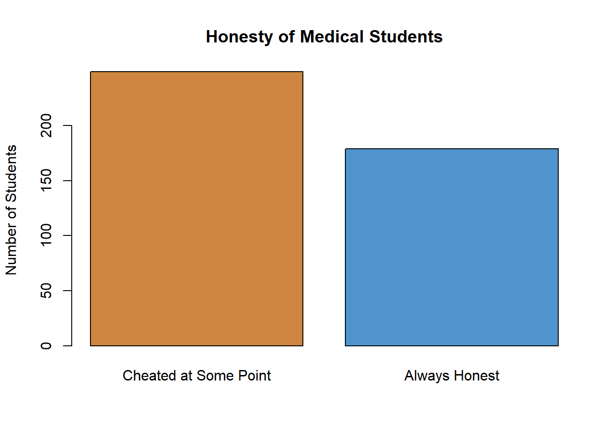

Lesson 17: Inference for One Proportion
Hypotheses Test for One Proportion
Case Study: Can You Taste PTC?


The ability to taste the chemical Phenylthiocarbamide (PTC) is hereditary. Some people can taste it, while others cannot. The ability to taste PTC is typically assessed using paper test strips. When a PTC test strip is placed on the tongue, it will either taste like regular paper or else have a bitter taste. It is believed that 70% of all people are able to taste PTC.

Data were collected by a student Elise Johnson to investigate this claim. Volunteers were provided with PTC test strips and asked if they could taste anything besides paper. A total of \(n = 118\) inviduals participated in the study.

Out of the 118 people who participated in the research, 89 indicated that they can taste PTC. The proportion of people in the sample who could taste PTC is \[ \widehat p = \frac{89}{118} = 0.754 \]
In other words, 75.4% of the people surveyed could taste the chemical.
Show Code

This particular research study suggested that the proportion of people who can taste PTC is \(\frac{89}{118} = 0.754\), or 75.4%. Is this significantly different from the assumed value of 0.70 (i.e., 70%)? We can test this question using a hypothesis test.
R Instructions for a Hypothesis Test for One Proportion
Here are the instructions for conducting a hypothesis test for one proportion in R:
Step 1. Use RStudio to run the code in the file one_proportion_function.R. This will load a function that will conduct the test for one proportion.
Step 2. Ensure you know both the null hypothesis and alternative hypothesis of your test. In this case, the null hypothesis is \(H_0: p = 0.70\) and the alternative was \(H_a: p \neq 0.70\).
Step 3. Use one_prop_test(...) as follows to run the test for one proportion in R.
A few notes about using this function:
- The number of successes is entered using the parameter x
- The total number of trials is specified using the parameter n
- The null hypothesis is established by the parameter p. The default value is p = 0.5
- The alternative hypothesis is established by alternative = “two.sided”. Other options for the alternative hypothesis are alternative = “less” and alternative = “greater”.
When, the above one_prop_test(...) code is run in RStudio, it produces the following results. The output is formatted similar to R output you have seen in the past.
one_prop_test(x = 89, n = 118, p = 0.70, alternative = "two.sided")
## One Proportion z-Test
##
## Check for normality of p^:
## Hypothesis Test:
## np = 82.6
## n(1-p) = 35.4
## Confidence Interval:
## np^ = 89
## n(1-p^) = 29
##
## Hypothesis Test and Confidence Intervals
## z = 1.2857, p-value = 0.1986
## Alternative hypothesis: True population proportion is not equal to 0.7
## 95 percent confidence interval:
## 0.677, 0.832
## Sample Estimates:
## p^ = 0.754If the following conditions are satisfied:
- \(np \ge 10\)
- \(n(1-p) \ge 10\)
then the sample size is large enough that the Central Limit Theorem suggests the sample proportion, \(\widehat p\), is approximately normal.
As you can see from the output above, the requirements for conducting a hypotehsis test for one proportion are satisfied for the PTC data: \[ \begin{array}{ll} np = 118 \cdot 0.70 = 82.6 \ge 10 & \surd \\ n(1-p) = 118 \cdot (1-0.70) = 35.4 \ge 10 & \surd \end{array} \]
We can use a procedure that mimics the test for a single mean with \(\sigma\) known from the lesson titled Inference for One Mean: Sigma Known (Hypothesis Test) to conduct a test for a single proportion.
It is assumed that the true proportion of people who can taste PTC is 0.70. This is the null hypothesis. The alternative hypothesis is that the true proportion is different from 0.70. \[ H_0: p = 0.70 \\ H_a: p \ne 0.70 \]
We will use the \(\alpha = 0.05\) level of significance in this test.
Optional Reading: Computation of z for One Proportion (Hidden)
Click Here if you love MathFrom the output above, we note that \(z = 1.2857\). and the \(P\)-value is 0.1986. Since the \(P\)-value is greater than \(\alpha = 0.05\), we fail to reject the null hypothesis.

We conclude that there is insufficient evidence to suggest that the true proportion of the population that can taste PTC is different from 0.70. There is no reason to revise existing perspectives on the prevalence of the ability to taste PTC.
- Compare and contrast the test for one mean with \(\sigma\) known and the test for one proportion. Give at least two similarities and two differences.
Case Study: Water Quality

Macroinvertebrates are small insects (without an internal skeleton) that live on the bottom of a stream. These insects are ideal for monitoring changes in water quality, because they (1) live nearly all their life in the water, (2) are easy to collect and identify, (3) often live for several years, (4) have a limited ability to migrate, and (5) they are influenced by environmental conditions.
In any population of macroinvertebrates, there will be indicators of good health and indicators of poor health. Data are collected by capturing macroinvertebrates and recording whether they indicate good health or poor health for the river. In particular sections of a small river near Bozeman, Montana, about 60% of the indicators observed have historically been associated with good health.
Researchers suspect that the water quality in the area has decreased, suggesting that less than 60% of the indicators will show good health. A random sample of macroinvertebrates were captured from the river.
Among the \(n = 40\) observed indicators of health, \(x = 19\) suggested good health. We enter this information into the one_prop_test(...) function:
one_prop_test(x = 19, n = 40, p = 0.60, alternative = "less")
## One Proportion z-Test
##
## Check for normality of p^:
## Hypothesis Test:
## np = 24
## n(1-p) = 16
## Confidence Interval:
## np^ = 19
## n(1-p^) = 21
##
## Hypothesis Test and Confidence Intervals
## z = -1.6137, p-value = 0.0533
## Alternative hypothesis: True population proportion is less than 0.6
## 95 percent confidence interval:
## -INF, 0.63
## Sample Estimates:
## p^ = 0.475Use this information to answer the following question.
- What is the proportion of the observed indicators that suggested good health? Express your answer as a decimal and a percentage.
The following questions will guide you through the process of conducting a hypothesis test to determine if the water quality has decreased. Use \(\alpha = 0.05\) for this test.
- Are the requirements for conducting a hypothesis test for one proportion satisfied?
- State the null and alternative hypotheses.
- Find the \(z\)-score.
- What is the \(P\)-value?
- What is the conclusion of this test? How would you state the conclusion in an English sentence?
Even though the proportion of indicators that suggested good health was less that 60%, it was not statistically significantly less than 60%. Unless future research indicates to the contrary, we cannot say that the water quality in this river has decreased.
Confidence Interval for One Proportion
Case Study: Honesty at Medical School
Frederick Sierles and his colleagues were interested in studying the honesty of students in medical school.
They distributed an anonymous survey to students at two American medical schools. The questionnaire was given during class without any prior announcement to students. The authors of the study personally supervised the distribution and collection of the surveys. 95% of the students completed the survey, and students from all four years of medical school training were represented. A total of 428 individuals participated in the survey.
The survey results showed that 58.2% (249 people out of the 428 total that completed the survey) indicated that they had cheated in some way during medical school. The results were published in a journal article in 1980.
Show Code
This study only studied two medical schools in the U.S. However, we would really like to use the data from this study to generalize to the larger population of all medical students who are like these. While it is interesting to know that 58.2% of students at these two medical schools that were sampled had cheated at some point in their education, the reason the study was conducted is to provide an estimate of the true proportion of medical students that had cheated at some point, \(p\).
The sample statistic \(\hat p\) is called a point estimate of the population parameter \(p\). The sample proportion, \(\hat p\), is a single point on the number line that estimates the value of the true proportion, \(p\).
A point estimate like \(\hat p\) is helpful, but it does not give us direct information on how close it is to the true parameter, \(p\). We use a confidence interval to find a range of plausible values for the parameter.
Confidence Interval for the True Proportion
To find a confidence interval for the population proportion, \(p\), we follow the same pattern as was done in the estimates for \(\mu\) in the lesson titled Inference for One Mean: Sigma Known (Confidence Interval). We start with the point estimate of \(p\) and we add and subtract the margin of error (a certain number of standard deviations) from this value.
The point estimate for \(p\) is \(\widehat p\). You might want to review the mean and standard deviation of the random variable \(\widehat p\) in the lesson on Describing Categorical Data: Proportions; Sampling Distribution of a Sample Proportion. We use the equations for the mean and standard deviation of the sample proportion to create a confidence interval for the true population proportion, \(p\).
Optional Reading: Computation of a Confidence Interval for One Proportion (Hidden)
Click Here if you love MathR Instructions for Computing a Confidence Interval for One Proportion
Here are the instructions for finding a confidence interval for one proportion in R:
Step 1. Use RStudio to run the code in the file one_proportion_function.R. This will load a function that will allow you to compute the confidence interval for one proportion.
Step 2. Use one_prop_test(...) as follows to compute the confidence interval for one proportion in R.
A few notes about using this function:
- The number of successes is entered using the parameter x
- The total number of trials is specified using the parameter n
- By default the
one_prop_test(...)function uses a 95% confidence level. If you wanted to use a different confidence level, you can specify your level of significance using the argumentconf.level =as follows:one_prop_test(..., conf.level = 0.99)orone_prop_test(..., conf.level = 0.90).
When, the one_prop_test(...) code is run in RStudio, it produces the following results. The output is formatted similar to R output you have seen in the past.
one_prop_test(x = 89, n = 118, conf.level = 0.95)## One Proportion z-Test
##
## Check for normality of p^:
## Hypothesis Test:
## np = 59
## n(1-p) = 59
## Confidence Interval:
## np^ = 89
## n(1-p^) = 29
##
## Hypothesis Test and Confidence Intervals
## z = 5.5234, p-value = 3.32e-08
## Alternative hypothesis: True population proportion is not equal to 0.5
## 95 percent confidence interval:
## 0.677, 0.832
## Sample Estimates:
## p^ = 0.754The 95% confidence interval for the true proportion of medical students who cheat is: \((0.535, 0.629)\).
To interpret this interval, we say that we are 95% confident that the true proportion of people who cheat in medical school is between 0.535 and 0.629. This represents the range of plausible values for the true proportion of students who cheat at these medical schools.
Requirement
Like other procedures, there are requirements that must be checked in order for this confidence interval to be valid. The confidence intervals are valid whenever \(n \widehat p \ge 10\) and \(n(1-\widehat p) \ge 10\). Notice that for the data on cheating in medical school, we have \(428 \cdot 0.582 = 249\) and \(428 \cdot (1-0.582) = 179\) which are both greater than 10, so this requirement is satisfied.
Case Study: Another Study on Honesty at Medical School
DeWitt C. Baldwin, Jr. and others conducted a larger study to assess how widespread cheating is in medical schools. Elected class officers at 40 schools were invited to distribute a survey to their second-year classmates. Surveys were completed by students from 31 of the 40 schools. Among all students attending the 31 schools, 62% participated in the survey, yielding a total of \(n = 2426\) surveys. Out of this group, \(x = 114\) admitted to cheating in medical school. These results were published in Academic Medicine in 1996.
- Use R to compute a 99% confidence interval for the true proportion of medical students who cheat, based on this study.
- What is the value of \(\widehat p\) in this study?
- Are the requirements for creating a confidence interval satisfied?
- Compare the confidence intervals obtained from the Sierles study to the confidence interval from Baldwin’s study. How do the results compare to each other?
- What are some possible factors that might explain the discrepancy in these two studies?
- How would you feel if you knew that your doctor cheated in medical school?
Why it is important to you to be honest in all your dealings with your fellow men–including your academic pursuits?
Sample Size Calculations
If you can reduce the margin of error by increasing the sample size, then you can achieve a specific margin of error by choosing a large enough sample. So, if you are planning a future study, you can estimate the sample size you need to obtain a desired margin of error, \(m\).
The formula for the margin of error is: \[ m = z^* \sqrt{\frac{\widehat{p} (1- \widehat{p})}{n}} \] If we solve this equation for \(n\), we get: \[ n = \left( \frac{z^*}{m} \right)^2 \widehat{p} (1-\widehat{p}) \] Note that this equation requires us to know the value of \(\widehat{p}\). Unless we do a study, we do not know the value of \(\widehat{p}\). Sometimes we have a prior estimate of the true proportion of successes, denoted \(p^*\).
If we have a prior estimate for \(\widehat{p}\), (let’s called it \(p^*\),) we can plug this value into the equation above to compute the sample size required to obtain our desired margin of error: \[ n = \left( \frac{z^*}{m} \right)^2 p^* (1-p^*) \] where \(z^*\) is determined by your confidence level, \(m\) is your desired margin of error, and \(p^*\) is an estimate of the true proportion of successes. If no prior estimate for \(p\) is available, we can use the following formula to compute our sample size: \[ n = \left( \frac{z^*}{2m} \right)^2 \] The latter formula (where no prior estimate for \(p\) is available) will result in excessively large sample sizes if \(p\) is small (say, less than 0.3) or large (say, greater than 0.7.) Otherwise, the results for the two equations will be fairly similar.
No matter what value you obtain for the sample size, if it is not a whole number round it up to the nearest whole number. It doesn’t matter if the decimal part of the number of very small. Round it up anyway.
For example, if you compute \(n = 96.11\), then the sample size required is \(97\).
Example: Prior Estimate of \(p\) is Available
If you want to find the sample size required to get a margin of error of \(m = 0.03\) with 95% confidence, and previous studies have shown that the true proportion is approximately equal to \(p^* = 0.82\), then the sample size required would be: \[ \displaystyle { n = \left( \frac{z^*}{m} \right)^2 p^* (1-p^*) = \left( \frac{1.96}{0.03} \right)^2 (0.82) (1-0.82) = 630.02 } \] We need to round this answer up to the next larger whole number. You would need to collect \(n = 631\) observations to obtain the desired margin of error. Notice that even though the decimal part of \(n\) was small (\(0.02\),) we rounded \(n\) up to the next largest integer.
Example: No Prior Estimate of \(p\) is Available
If you want to find the sample size required to get a margin of error of \(m = 0.03\) with 95% confidence, but you have no way to estimate the value of \(p\), then the sample size required would be: \[ \displaystyle { n = \left( \frac{z^*}{2m} \right)^2 = \left( \frac{1.96}{2 \cdot 0.03} \right)^2 = 1067.111 } \] We need to round this answer up to the next larger whole number. You would need to collect \(n = 1068\) observations to obtain the desired margin of error.
The sample size required to provide the desired margin of error of \(m=0.03\) can be much larger when we do not have an estimate of the true proportion. This is exactly what we observe in this case. If we estimate the value of \(p\) to be \(p^* = 0.82\), we need \(n=631\) observations to obtain a margin of error of \(0.03\) with 95% confidence. However, if we have no prior estimate for \(p\), the sample size required to guarantee that we a margin of error of \(0.03\) or less is \(1068\). This is a huge increase.
Summary
The estimator of \(p\) is \(\displaystyle{ \widehat p = \frac {x}{n}}\).
The test statistic for a hypothesis test of one proportion is \(z\). You can use the function
one_prop_test()to perform the hypothesis test in R.The requirements for a hypothesis test involving one proportion are \(np\ge10\) and \(n(1-p)\ge10\), where \(p\) is the value given in the null hypothesis.
A confidence interval for the true proportion \(p\) can be computed in R using the function
one_prop_test().The requirements for a confidence interval are \(n \widehat p \ge 10\) and \(n(1-\widehat p) \ge 10\).
We can determine the sample size we need to obtain a desired margin of error using the following formulas:
If a prior estimate of \(p\) (called \(p^*\)) is available: \[\displaystyle{ n = \left(\frac{z^*}{m}\right)^2 p^*(1-p^*) }\]
If no prior estimate is available, we use the formula \[\displaystyle{ n = \left(\frac{z^*}{2m}\right)^2 \phantom{p^*(1-p^*)} }\]
In either case, if the value you get for \(n\) is not a whole number, round up to the next highest whole number.
Copyright © 2020 Brigham Young University-Idaho. All rights reserved.